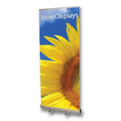
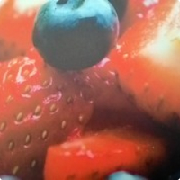
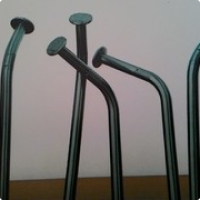
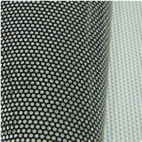
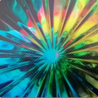

Материалы для печати (сольвент, экосольвент)
Специальные материалы
- SOLO Roll-Up 170 PP
-

SOLO Roll-Up PP 170 - полипропиленовая пленка со специальным покрытием для печати, обратная сторона – серая.
Благодаря своим качествам (гибкость, непрозрачность) – идеальный материал для использования в мобильных стендах Roll-Up и L-Banner, POS индустрии, для печати плакатов, оформления выставочных стендов и т.д.
Имеет хорошую устойчивость к царапинам. Сатиновое покрытие обеспечивает великолепную цветопередачу. Структура материала не допускает скручивание краев.
Подходит для печати эко-сольвентными, лайт-сольвентными, сольвентными, УВ и латексными чернилами.
- Баклит SOLO BACK
-

Solo Back PET (175мкм)
Идеально белый полуматовый печатный материал для применения в наружной и интерьерной рекламе, световых коробах, имеющий специальное покрытие для печати Eco Solvent, Light Solvent и Solvent чернилами. Превосходно передаёт гамму цветов даже при дневном свете, что позволяет создавать очень реалистичные работы.
С целью избежания следов отпечатков пальцев, рекомендуется работать с материалом в перчатках. Для дополнительной защиты материала возможна холодная ламинация. Обратная сторона - глянцевая.
Наименование Размер SOLO BACK 1,27х30м. SOLO BACK 0,914x30м. - Блокирующий материал SOLO BLOCK
-

SOLO Block (Blockout film)
Имеет специальное покрытие для печати сольвентными, эко-сольвентными и лайт-сольвентными чернилами.
Специальное покрытие из полиэстера на материале позволяет полностью блокировать свет с любой из сторон. Материал обладает высокой прочностью, что позволяет закреплять в нём люверсы. Также благодаря специальной эластичной основе материала, он очень удобен в транспортировке и хранении. Идеален для экспонирования в торговых залах, административных зданиях, витринах магазинов, при ламинировании готового изображения, используется при оформлении выставочных стендов.
Наименование Размер SOLO Block 0.914х50 - Перфорированная пленка SOLO ONE WAY VISION
-

SOLO ONE WAY VISION
Перфорированная пленка для оклейки витрин магазинов, стекол общественного транспорта и легковых автомобилей. Идеальный диаметр отверстий – 0,16мм. позволяет пропускать наибольшее количество света, при хорошем качестве изображения. При краткосрочном использовании не требует дополнительной ламинации или лакирования. Материал покрыт с обратной стороны черным клеевым слоем, который полностью снимается вместе с пленкой без остатков. Бумажный лайнер 170 г/м покрыт PE слоем с двух сторон, что облегчает работу при оклейке.
Наименование Размер SOLO ONE WAY VISION 1,52x50м. - Материал для Х-стойки SOLO EASY 280
-

Синтетическая бумага со специальным глянцевым покрытием, сочетает в себе лучшие качества бумаги и баннера – легкость бумаги и стойкость баннера. Отличное качество печати. Идеально подходит для оформления Roll Up, X- Kite выставочных конструкций, не требует специальной обработки краев. При растяжке не дает эффекта скручивания краев материала. Благодаря специальной основе материала не образует заломов при транспортировке в рулоне, что позволяет использовать готовый плакат несколько раз. Великолепно передает яркость черного цвета. Материал позволяет печатать высококачественные изображения фотографического качества. Пленка обработана антистатическим покрытием. Данный материал можно использовать успешно для нестандартных изделий – печать скручивающихся метров, растяжек, промышленных образцов.
В процессе эксплуатации рекомендуется использовать перчатки, чтобы избежать отпечатков пальцев.
- Спецификация:
- Покрытие полуглянец
- Плотность 250 гр/м2
- Толщина 280 мкм
- Температура использования От – 10° до +50°С
Наименование Размер SOLO Easy 280 0.914х25м.